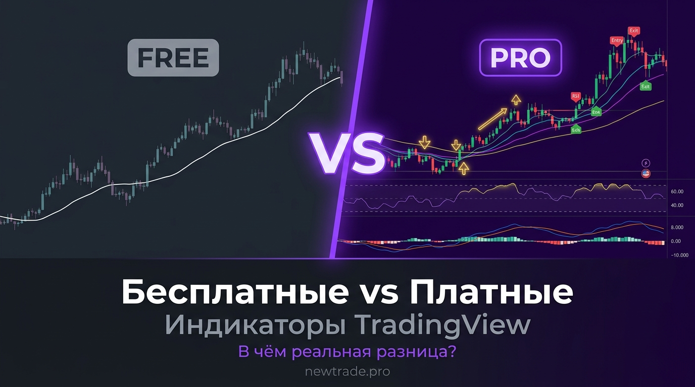

Платные vs бесплатные индикаторы TradingView: в чём разница и стоит ли платить

На TradingView больше 100 000 индикаторов. Большинство — бесплатные, открытые, доступны в один клик. Но опытные трейдеры нередко платят за закрытые инструменты от $30 до $200 в месяц. Почему? И стоит ли оно того?
Однозначного ответа нет — и это нормально. Всё зависит от вашего уровня, стиля торговли и задач. В этой статье разберём оба лагеря честно: без рекламы платных инструментов и без огульного хейта в адрес бесплатных.
Бесплатные индикаторы вполне могут давать профессиональный результат — при правильном подходе. Платные не гарантируют прибыль — но могут сэкономить сотни часов и дать реальное преимущество. Разберёмся, в каких случаях каждый вариант оправдан.
Как устроена экосистема индикаторов в TradingView
TradingView — это не просто платформа с графиками. Это ещё и маркетплейс торговых инструментов, где авторы публикуют собственные скрипты на Pine Script — встроенном языке программирования.
Все индикаторы делятся на три категории:
- Встроенные (built-in) — разработаны командой TradingView. Классика: RSI, MACD, Bollinger Bands, EMA и ещё ~100 инструментов. Бесплатны на любом тарифе.
- Публичные пользовательские — написаны сообществом и опубликованы в открытом доступе. Более 100 000 скриптов. Бесплатны, но качество сильно варьируется.
- Платные / закрытые (invite-only) — авторы ограничивают доступ и продают подписку. Код закрыт. Доступ через инвайт от автора.
Именно третья категория вызывает больше всего вопросов: «Зачем платить за индикатор, если есть тысячи бесплатных?» Это честный вопрос — и ниже на него есть честный ответ.
Бесплатные индикаторы: сильные стороны и ограничения
Не стоит недооценивать бесплатные инструменты. Встроенные индикаторы TradingView — RSI, MACD, Bollinger Bands, Ichimoku, Volume Profile — это промышленный стандарт. Именно на них построены стратегии большинства успешных трейдеров по всему миру.
✅ Преимущества
- Нулевые затраты — протестируешь сотни стратегий бесплатно
- Встроенные индикаторы — проверены годами и миллионами трейдеров
- Открытый код — можно изучить логику и адаптировать под себя
- Огромная база — более 100 000 публичных скриптов на любой вкус
- Без обязательств — переключайся между инструментами свободно
❌ Недостатки
- Все видят те же сигналы — рыночное преимущество нулевое
- Качество публичных скриптов непредсказуемо — много мусора
- Нет поддержки автора — баг или неточность никто не исправит
- Редко обновляются под текущие рыночные условия
- Могут перестать работать после обновлений Pine Script
«Встроенные индикаторы TradingView — это как стандартный набор инструментов в мастерской. Хороший мастер сделает с ними многое. Плохой не исправит ситуацию ни каким молотком.»
Где искать качественные бесплатные индикаторы
Среди 100 000+ публичных скриптов большинство — дублируют друг друга или просто плохо написаны. Но есть способы найти жемчужины:
- Фильтр «Editors' Pick» в разделе Public Library — TradingView сам отбирает лучшие скрипты
- Сортировка по количеству «лайков» — индикаторы с тысячами лайков обычно заслуживают внимания
- Профили известных авторов — LuxAlgo, PineCoders, ChartPrime публикуют бесплатные версии своих продуктов
- Telegram- и Discord-сообщества — опытные трейдеры часто делятся рабочими связками с открытым кодом
Платные индикаторы: за что реально берут деньги
Когда трейдер платит за индикатор, он платит не за «секретную формулу». Он платит за несколько конкретных вещей:
1. Уникальный алгоритм. Хороший платный индикатор — это авторская разработка с нестандартной логикой. Например, инструмент, который анализирует дельту объёма, определяет ликвидационные уровни или строит зоны дисбаланса на основе данных биржевого стакана. Такое не найдёшь в открытом доступе.
2. Комплексность — «всё в одном». Многие платные продукты — это не один индикатор, а целая торговая система на одном экране: тренд, уровни, импульс, точки входа, зоны стопа и тейка — в одном инструменте. Это экономит время и упрощает принятие решений.
3. Поддержка и обновления. Рынки меняются. Алгоритмы, которые работали в 2021 году, могут плохо работать в 2025-м. Платные авторы, как правило, регулярно обновляют индикаторы и отвечают на вопросы. При проблеме есть к кому обратиться.
4. Эксклюзивность. Invite-only доступ означает, что индикатором пользуется ограниченное число людей. Если все видят одно и то же — никто не получает преимущества. Чем меньше людей используют инструмент, тем дольше работают его сигналы.
✅ Преимущества
- Уникальный алгоритм — не видят тысячи других трейдеров
- Комплексное решение — тренд, вход, стоп и цель в одном месте
- Регулярные обновления под текущий рынок
- Прямая поддержка автора — баги исправляются
- Проверенная статистика — backtesting от разработчика
❌ Недостатки
- Ежемесячная подписка — затраты даже в убыточные месяцы
- Нельзя проверить логику — код закрыт
- Риск мошенничества — рынок полон «грааль-индикаторов»
- Зависимость от автора — если он пропадёт, теряешь доступ
- Высокий разброс качества — цена ≠ результат
Обещания «100% winrate», «гарантированная прибыль», «сигналы без ложных срабатываний» — это маркетинговая ложь. Ни один индикатор не может гарантировать прибыль. Если автор обещает такое — бегите.
Как выбрать: 6 критериев честной оценки
Неважно, бесплатный индикатор или платный. Перед использованием задай себе эти шесть вопросов:
- Есть ли подтверждённый бэктест? Не скриншот «красивых входов», а статистика на реальной истории: winrate, матожидание, максимальная просадка.
- Какой таймфрейм и инструмент? Индикатор, заточенный под BTC на 4H, может давать мусор на акциях или на 15M.
- Когда последнее обновление? Скрипт, который не обновлялся 2+ года, скорее всего устарел.
- Есть ли сообщество / отзывы? Реальные пользователи с реальными результатами — лучший показатель качества.
- Понимаешь ли логику? Даже если код закрыт, автор должен объяснять принцип работы. «Секретный ИИ» без объяснений — тревожный сигнал.
- Есть ли пробный период? Многие честные авторы дают 7–14 дней триала. Если триала нет и возврат не предусмотрен — риск высокий.
Кому что подходит: три портрета трейдера
👤 Новичок (опыт до 6 месяцев)
Рекомендация: начинать с бесплатных встроенных индикаторов. На этом этапе важнее понять рынок и дисциплину, чем найти «магический инструмент». Что брать: RSI, MACD, EMA 50/200 — освоить их досконально. Платный индикатор сейчас — скорее всего деньги на ветер: нет базы для правильного применения.
👤 Трейдер со стратегией (опыт 6 мес – 2 года)
Рекомендация: рассмотреть платный инструмент, закрывающий конкретную слабость стратегии. Например, если не хватает точного определения уровней — Volume Profile Pro. Или: если нужна автоматическая разметка структуры — LuxAlgo Premium. Платный индикатор здесь оправдан, если вы уже знаете, чего не хватает системе.
👤 Профессионал / алго-трейдер
Рекомендация: использует и бесплатные, и платные — в зависимости от задачи. Чаще заказывает разработку индикатора под свою стратегию или пишет сам. Ключевой критерий — не цена, а эксклюзивность и возможность интеграции с ботом. Именно здесь авторские индикаторы newtrade.pro дают максимум: уникальные алгоритмы + связка с роботом.
Сравнительная таблица: итог
| Параметр | Бесплатный | Платный |
|---|---|---|
| Цена | Бесплатно | от $10–$100/мес |
| Точность сигналов | Базовая | Высокая / кастомная |
| Уникальность алгоритма | Публичный код | Закрытый / авторский |
| Поддержка автора | Нет / форумы | Да, прямая связь |
| Обновления | Редко / никогда | Регулярные |
| Уведомления (алерты) | Ограничены TV-планом | Встроены в индикатор |
| Кастомизация | Ограниченная | Полная / под запрос |
| Порог входа | Любой | Средний и выше |
Три главные ошибки при выборе индикатора
- Искать «Святой Грааль». Ни один индикатор не даёт 100% прибыльных сигналов. Цель инструмента — повысить вероятность успешного входа, а не гарантировать его.
- Покупать из-за красивого маркетинга. Скриншоты с идеальными входами на истории — это cherry-picking. Требуй статистику на форвард-тесте или независимые отзывы.
- Менять индикаторы после каждого убытка. Убыточные сделки будут всегда — это часть торговли. Инструмент нужно оценивать на выборке минимум 50–100 сделок, а не по последним двум входам.
Вывод
Платные индикаторы не лучше бесплатных по умолчанию. И бесплатные не хуже платных автоматически. Разница — в задаче, опыте трейдера и конкретном инструменте.
Если вы только начинаете — освойте встроенные инструменты TradingView. RSI, MACD и EMA дают всё необходимое для построения рабочей стратегии. Когда вы поймёте, чего вам не хватает — тогда платный инструмент станет осознанной инвестицией, а не попыткой купить прибыль.
Если вы уже торгуете по системе и ищете преимущество — авторские индикаторы с реальной статистикой способны дать ощутимый результат. Главное — проверять, а не верить на слово.
📈 Индикаторы, которые стоят своих денег
На newtrade.pro — авторские индикаторы для TradingView с закрытым алгоритмом, реальной статистикой и поддержкой. Без обещаний «грааля» — только рабочие инструменты.
Смотреть индикаторы на newtrade.pro →